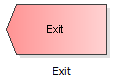

Just as a clients's way through the queueing system always starts at a source, it always ends at an exit. All client streams have to ultimately be connected to an output.
To add an element - in this case an exit - to the model, drag it with pressed left mouse button to the drawing surface.
Drag this element from the templates panel to the draw surface:
